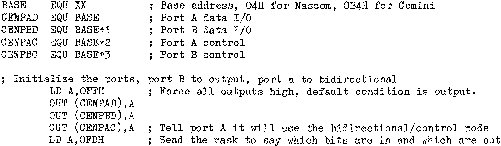

The Centronics connector is different to the D25 connector. It is a 36 way
connector arranged so that all signal leads are on the top row, whilst the opposite
pins on the bottom row are all signal grounds. This allows for the use of twisted pair
cables to improve the noise immunity. To confuse the issue, Centronics refer to the
eight data lines as DATA 1 thro’ DATA 8, whilst computer people think of these as Bits
0 thro’ 7. DATA 1 is connected to BIT 0, DATA 2 to BIT 1, etc. Beware, as has already
been noted, there are some variations on the theme, Epson for instance use one of the
lower pins as a device select pin on some models, so it pays to read the manual
referring to an individual printer before connecting up. A typical Centronics
configuration is as follows:
| 1 | DATA STROBE |
| 2 | DATA 1 |
| 3 | DATA 2 |
| 4 | DATA 3 |
| 5 | DATA 4 |
| 6 | DATA 5 |
| 7 | DATA 6 |
| 8 | DATA 7 |
| 9 | DATA 8 |
| 10 | ACK |
| 11 | BUSY |
| 12 | |
| 13 | |
| 14 | System ground |
| 15 | |
| 16 | System ground |
| 17 | Protective ground |
| 18 | |
| 19 | Twisted pair ground for pin 1 |
| 20 | Twisted pair ground for pin 2 |
| 21 | Twisted pair ground for pin 3 |
| 22 | Twisted pair ground for pin 4 |
| 23 | Twisted pair ground for pin 5 |
| 24 | Twisted pair ground for pin 6 |
| 25 | Twisted pair ground for pin 7 |
| 26 | Twisted pair ground for pin 8 |
| 27 | Twisted pair ground for pin 9 |
| 28 | Twisted pair ground for pin 10 |
| 29 | Twisted pair ground for pin 11 |
| 30 | Twisted pair ground for pin 31 |
| 31 | INPUT PRIME |
| 32 | |
| 33 | |
| 34 | |
| 35 | |
| 36 | |
The DATA lines are connected to the PIO
port B, bits 0 to 7, the STROBE is connected
to PIO port A, bit 1, whilst the BUSY line is connected to PIO port A bit 0. The
warnings given earlier about system and protective grounds apply equally in the
Centonics interface, so care is advised.
Again, as with the serial output, the scheme is simple and follows similar
lines. However, the PIO device must first be primed. The PIO has several modes of
operation, input, output, bit mode and bidirectional/control mode, and uses a control
port for each half of the PIO device to program it’s respective mode. The control port
for the PIO is addressed at the port address + 2. On a Nascom the actual input/output
port for the A half of the PIO is port 04H whilst its control port is port 06H,
likewise, the B half input/output is port 05H and its control is port 07H. On the
Gemini Multiboard machines port A I/O is port 0B4H and its control is 0B6H, port B I/O
is port 0B5H and its control is 0B7H. If we use labels for these addresses, the
following listing will make sense regardless of the actual port addresses. The
initialization routine need only be called once prior to use, but note that RESETting
the computer will return the PIO device to it’s default mode, and the routine will
need to be called again. These routine are due to Richard Beal (again) as they are
more elegant than my original version, although somewhat more complex.
